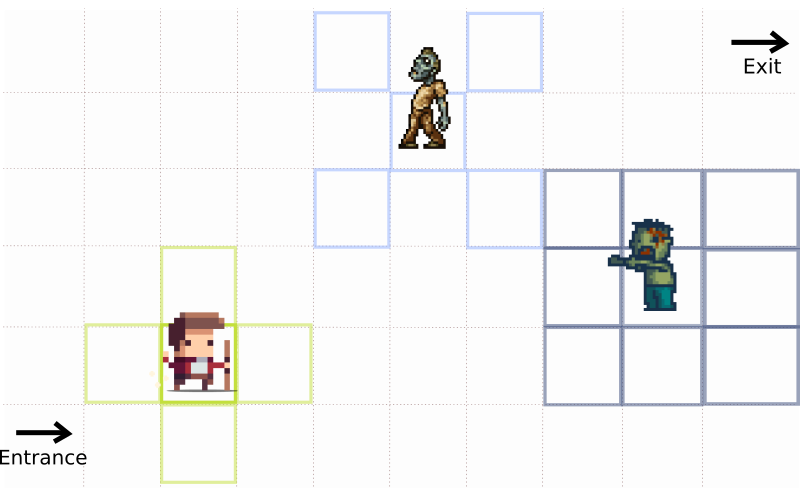

Stomp is a fast turn based music action game. The premise of this game is "Last of us" meets "Chess"

The city has been infected by a virus and has turned cannibalistic. Your task is to guide the hero across different maps (levels) to the safe house. Like chess, the player can only make certain moves (level up to unlock certain moves) and different zombies move differently. The only way to neutralize the zombies is to stomp on them during the player move. Based on the music playing, you have certain number of beats to figure out your next move. For example, on level 1, at the end of say, 8 beats, the player and the zombies simultaneously make a move. The speed increases as levels progress. As levels progress, player and zombie would gain more moves and abilities.
This is a puzzle game based off of the animated movie "Home". Help the aliens find a new home by colonizing various parts of the planet.
An area can be colonized only if all the available spots are taken by the aliens. Click on the spacheship to spawn aliens on the entire line of tiles. Figure out the right order to make sure all the spots are taken. (Art Note: Can be made more fun by putting actual places of the earth. Each level can be a major city on the Earth, like Paris/London/New York, etc.)
This is a pvp turn based game similar to battlefield where you use deduction tactics to win the war.
The player can select from different classes of warriors (archers/knight/wizard,etc), each having unique abilites and then position them on their side. The player view looks like the above image. The player doesn't know what warriors the opponent has chosen. Based on how the opponent plays, the player has to deduce the warrior class and defeat them accordingly.